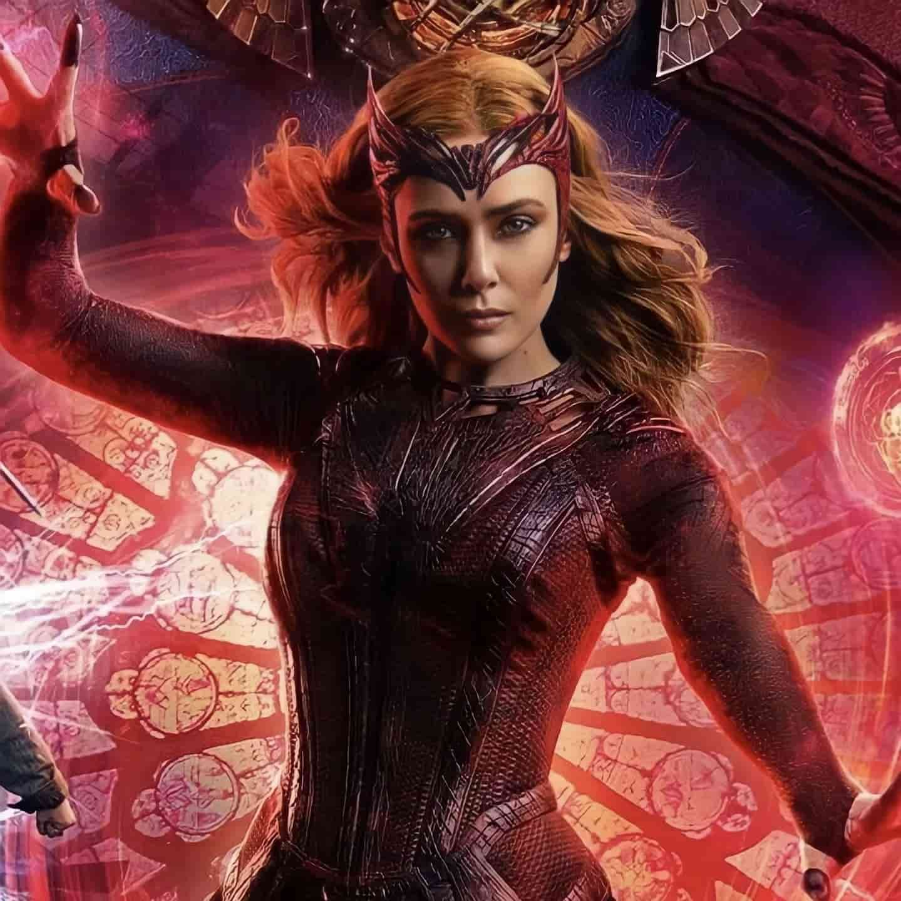
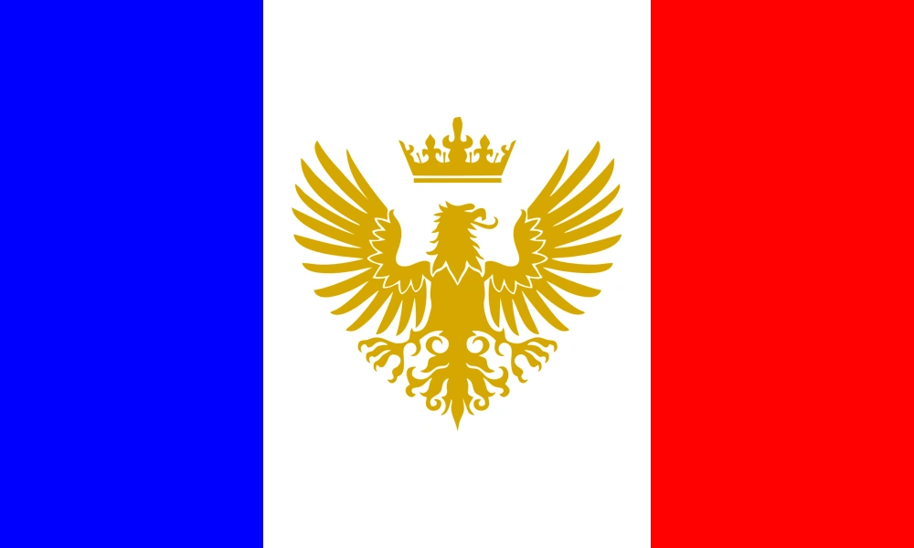

CONTACTO
 +1 640-989-1510
+1 640-989-1510
 wandamaximoff@gmail.us
wandamaximoff@gmail.us
 @brujaescarlata
@brujaescarlata
 @habeisvistoamishijos
@habeisvistoamishijos
 @ayudabuscoamishijos
@ayudabuscoamishijos
IDIOMAS
 Sokoviano Nivel Nativo
Ingles Nivel C1
Más Acerca De Wanda Maximoff
PERFIL
- Interpretada por: Elisabeth Olsen
- Creada por: Stan Lee y Jack Kirby
- 10 de febrero de 1989 (Sokovia) - Desconocida
- Soy la Bruja Escarlata
EXPERIENCIA
He aparecido en numerosas películas y una serie:
- Capitán América: El soldado de invierno - Créditos finales (2014)
- Vengadores: Era de Ultron (2015)
- Capitán América: Civil War (2016)
- Vengadores: Infinity War (2018)
- Vengadores: Endgame (2019)
- Doctor Strange Multiverse of Madness (2022)
- Coprotagonista en la serie: WandaVision (2021)
HABILIDADES
- Manipulación Magia Caotica
- Control de la ciudad de Westview y sus habitantes
- He creado una ciudad para evadirme de mi dolor por la pérdida de mi marido Vision